Tongda User Manual
Tongda is a pain diary for tracking chronic pain and finding out — from your own records — which treatments actually helped. This manual walks through every feature in the order you meet it in the app.
What Tongda is for
Pain is hard to remember accurately. "Is it better than last month?" is difficult to answer honestly, and judgments about which medication or therapy helped end up resting on impressions. Tongda exists to close that gap.
- Log Pain — record when it hurt, where, and how badly, by drawing directly on a body map.
- Log Treatment — record what you did about it: medication, physical therapy, injections, exercise, heat or ice.
- Analyse — see time-of-day patterns, pain trends, and a ranking of your treatments by effect.
- Report — export a summary document as a PDF to bring to an appointment.
Records are stored on your device. There is no account and no sign-in.
Get started in 3 minutes
Every record in Tongda belongs to a pain — a named condition you want to track, such as "Lower back pain" or "Migraine". So the first step is creating one.
- Tap Log Pain on the home screenIt is in the quick-record area.
- On the Select Pain screen, tap + to add oneBe specific enough to recognise later — for example "Right shoulder pain" or "Knee pain (stairs)".
- Select it to open the logging screenThe date and time are pre-filled with the current moment; change them if the episode was earlier.
- Tap Edit and mark where it hurts on the body mapPick an intensity and paint with your finger. See the body map chapter for the controls.
- Choose symptom types and add a notePicking sensations like "Tingling" or "Stiff" lets you see how the character of the pain changes over time.
- SaveIt appears immediately on the home screen's recent-pain card.
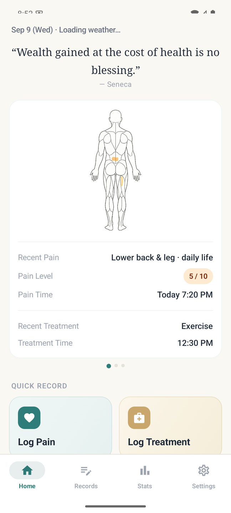
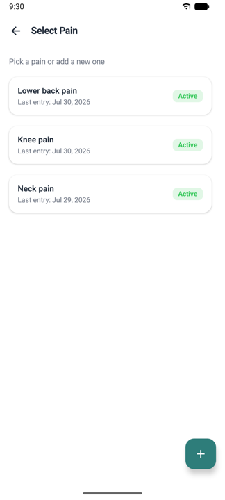
If you took medication or had treatment, log that too via Log Treatment. Effectiveness comparison in Pain Analysis only works once both kinds of records exist.
Logging pain
Start from Log Pain on the home screen or from the bottom tab bar. The screen has four parts.
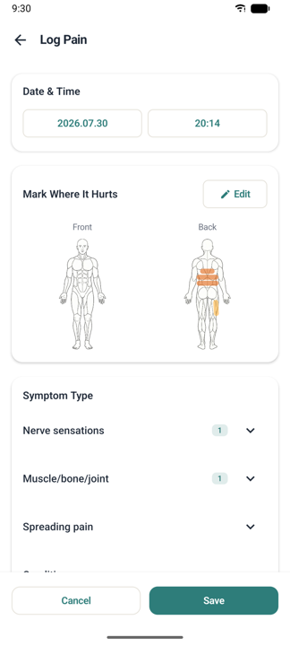
Date and time
Defaults to now. If the episode was earlier, tap to change it. Time-of-day patterns in Pain Analysis are calculated from this value, so entering the time it actually hurt keeps the analysis accurate.
Mark where it hurts
Tap Edit to open the body map editor. You can save without drawing, but drawing enables the area comparison and spread-over-time views in the report. Controls are in the next chapter.
Symptom type
Pick as many sensations as apply, grouped by category.
- Nerve sensations — Tingling, Like an electric shock, Burning, Numb, and others
- Muscle, bone & joint — Stiff, Aching, Stabbing, Pulling, Tight, and others
- Further categories can be expanded in the list.
If a sensation is missing, create it with + Add inside the category. Items you create are kept and offered in later records.
Note
Use the note for context that no number captures — weather, sleep, an unusually heavy day. Notes are searchable from the Records list.
Changing or removing an entry
Editing and deleting saved records, deleting a pain, and tidying the symptom and treatment lists each work differently — they are collected in Editing and deleting.
Using the body map
The body map lets you paint the painful areas onto a body outline. Front and back are separate views you can switch between and record independently.
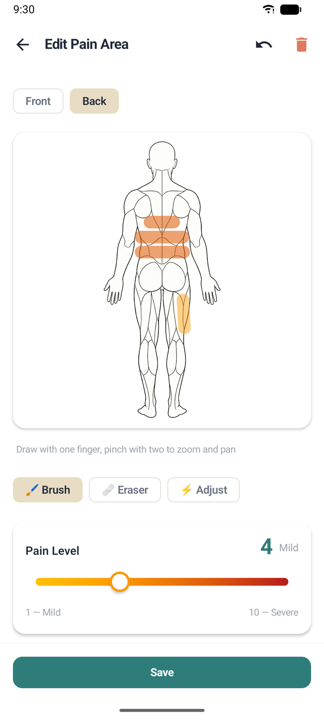
Three tools
| Tool | What it does |
|---|---|
| 🖌 Brush | Paints an area at the selected intensity. Draw with one finger. |
| 🩹 Eraser | Touch an area to erase it. |
| ⚡ Adjust | Tap a painted area and everything painted at that same intensity is selected together; +/− then changes only the intensity. Use it to correct the level without redrawing. |
Pain intensity
Intensity runs from 1 to 10, and the colour deepens as the number rises. The app uses one colour rule everywhere, so the shade you paint on the body map matches the intensity colour shown in lists and statistics.
| Intensity | Wording in the app |
|---|---|
| 1–2 | Barely there |
| 3–4 | Mild |
| 5–6 | Moderate |
| 7–8 | Quite bad |
| 9–10 | Excruciating |
Different areas in the same record can carry different intensities — for example 8 across the lower back and 4 for numbness running down the leg.
Brush size
Adjustable from 8 (fine) to 24 (thick). Pinch to zoom in, then paint fine to mark a small area such as a joint precisely.
Touch controls
- One finger — draw (or erase)
- Two fingers — zoom and pan
- Undo — cancels the last stroke
- Clear all — clears the current side
The "spread" figure in reports is approximated from the length of your strokes and the brush width — it is not a measured surface area. Keeping the brush size roughly consistent for the same condition makes period-to-period comparison more meaningful.
Logging treatments
Start from Log Treatment on the home screen. A treatment is anything you did about the pain: medication, physical therapy, an injection, stretching, heat or ice.
- Check the date and timeEffectiveness compares pain before and after this moment, so use the actual time of the treatment.
- Select the painEvery treatment is attached to one pain. The record will not save until you choose which one.
- Pick an item from the treatment categoriesIf it is missing, create it with + Add — for example "Ibuprofen 400mg".
- Save
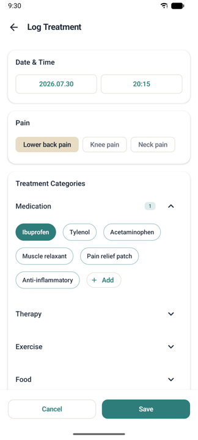
Include the dose in the item name ("Paracetamol 500mg"). Different doses can behave differently, and the name appears verbatim in reports, which makes it easier to discuss at an appointment.
Tapping a treatment record opens the treatment detail screen, showing the pain before and after it, how many times you have used it for this pain, and its average effect. Editing and deleting happen here too, and — as with pain records — they change your statistics.
Photos (MRI, CT, X-ray)
Keep imaging with the pain it belongs to. Photograph an MRI, CT or X-ray film, or capture something visible like swelling or a rash — then pull it up at an appointment instead of describing it from memory.
Photos are stored per pain. An MRI is not a fact about one logged episode — it is imaging of the condition, and it stays just as relevant months later. That is why the library hangs off the pain's detail screen rather than off individual records.
Adding a photo
- Open the pain's detail screenTap any pain record in the Records tab.
- Tap the Photos cardIt sits below the body map, showing thumbnails and a count — or a prompt when it is still empty.
- Tap + at the bottom rightThe photo picker opens; you can select several at once.
Tongda never asks for access to your whole gallery. It uses Android's own photo picker, so only the images you pick are handed to the app — the picker says as much at the top.
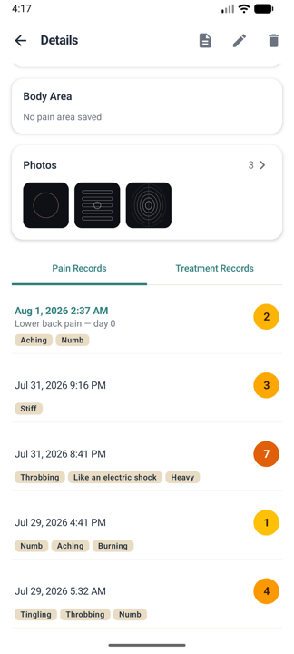
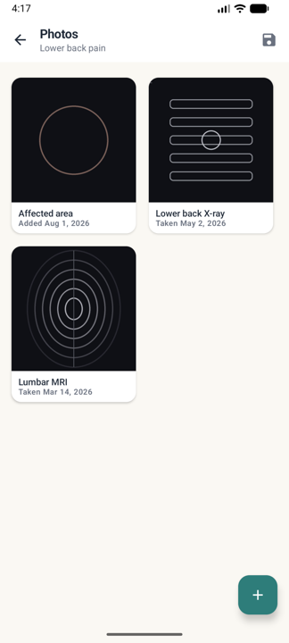
Dates — "Taken" and "Added" are different
Every photo shows a date. The word in front of it matters.
| Shown as | Meaning |
|---|---|
| Taken Mar 14, 2026 | The capture time recorded in the file itself. Camera photos almost always carry it. |
| Added Aug 1, 2026 | The file has no capture date (a screenshot, a re-saved download), so the app shows when you added it instead. |
The library is sorted by capture date, newest first. Add a March MRI and a May X-ray in any order and they still line up in the order the scans were taken. Exported filenames carry the capture date too.
Viewing and labelling
Tap a photo to open it full screen. Swipe between photos, and pinch to zoom when you need to read the text on a report or look closely at one area. The ✏️ button adds a label — something like "Lumbar MRI, Mar 2026" makes it findable later.
Deleting a photo
Two ways, both with a confirmation step.
- Long-press in the library → an ✕ appears on every photo → tap ✕ on the one to remove → confirm. To finish: Done in the top bar, the device back gesture, or a single tap on any photo.
- From full screen → 🗑 in the top bar → confirm.
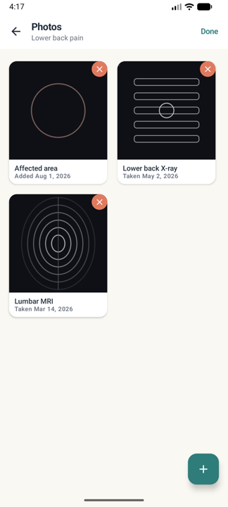
Deleting a photo erases the app's copy for good — there is no undo. The original in your gallery is untouched, but if you have already deleted that, the photo is gone.
Deleting a whole pain also deletes every photo attached to it.
⚠ Photos are not included in backups
The .tngd file produced by Export Data contains no photos — only pain and treatment records.
So move your photos separately when you change devices. Tap Export photos (💾) at the top of the library, choose a folder, and every photo for that pain is copied there. Filenames include the pain's name and the capture date so they stay recognisable.
Choosing Replace all on import deletes existing photos as well; the import dialog carries the same warning.
How many the free tier holds
The free tier stores 3 photos per pain; Premium is unlimited. There is no "watch an ad to unlock" here — photos occupy storage permanently, so a one-day pass would not fit.
Files larger than 20MB are rejected. A phone photo of an imaging film is usually 3–8MB, so this rarely comes up.
A copy is stored in the app's own private storage. No other app can open it, and it survives you deleting the original from your gallery. Nothing is uploaded anywhere — see Where your data lives.
Editing and deleting
How you remove something depends on what it is. Records are deleted with a button on their detail screen; a pain and the symptom and treatment items are deleted by long-pressing them. The difference is deliberate — it makes the destructive actions hard to trigger by accident.
| What | Edit | Delete |
|---|---|---|
| A single pain record | Detail view → ✏️ in the top bar | Detail view → 🗑 in the top bar |
| A single treatment record | Treatment detail → Edit | Treatment detail → Delete |
| A pain | Renaming and changing status are not supported | Select Pain → long-press → ✕ |
| Symptom / treatment items | No renaming (create a new one) | Long-press the chip → ⊖ |
| A photo | Edit its label with ✏️ in full screen | Long-press in the library → ✕, or 🗑 in full screen |
The four places long-press works
Everywhere you take something out of a list, the gesture is the same — long-press. Only the target and the badge differ.
| Screen | What you long-press | Badge | What wiggles | To finish |
|---|---|---|---|---|
| Select Pain | A pain card | ✕ | Every card | Done in the top bar |
| Log Pain | A symptom-type chip | ⊖ | That chip's category only | Done by the category |
| Log Treatment | A treatment-item chip | ⊖ | That chip's category only | Done by the category |
| Photos | A photo tile | ✕ | Every photo | Done in the top bar |
Pain cards and photos go through a confirmation dialog — both are unrecoverable once gone (a photo takes its file with it). Chips, by contrast, leave the list the moment you tap ⊖: records you already saved keep the item either way, so there is little to undo.
A single pain record
- Open the recordTap a pain record in the Records tab, or the Recent Pain card on the home screen. The detail view opens.
- Use the icons in the top bar📄 report · ✏️ edit · 🗑 delete — all three act on the record currently on screen.
- Use ← → to move between recordsA counter under the title shows where you are, such as 1 / 60. Edit and delete then apply to whichever record you moved to, so check the date and intensity on screen before deleting.
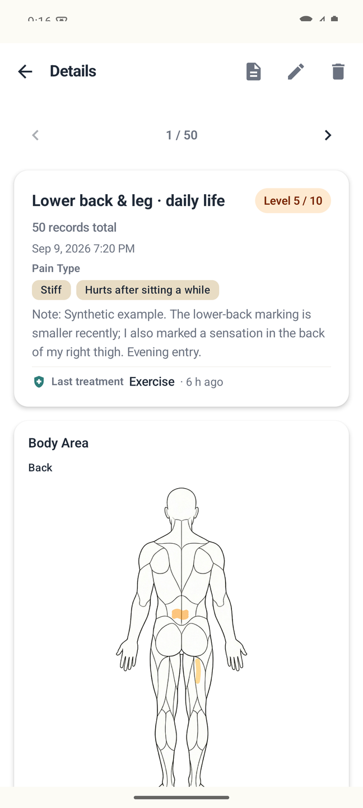
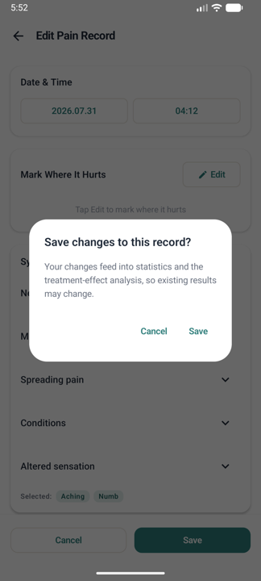
Edit reopens the logging screen exactly as you saved it — date and time, body map, symptoms and note are all editable. When you tap Save, a warning appears once: your edit will feed into the treatment-effectiveness results in statistics and reports, so existing figures may change. You have to tap Save again in that dialog to apply it.
Delete also asks for confirmation. Once confirmed it is gone and cannot be undone.
A single treatment record
Tap a treatment in the Records list (or the Recent Treatment card on the home screen) to open the treatment detail, which has Edit and Delete in the top bar. Saving an edit shows the same one-time warning as a pain record.
Editing or deleting a pain or treatment record also changes the treatment-effectiveness results in your statistics and reports. Effectiveness is computed by comparing the pain records around each treatment (see how effectiveness is calculated), so changing one record changes how that treatment is scored. That is why the app warns you before saving.
Deleting a pain — long-press
- Open the Select Pain screenIt is the screen you get from Log Pain on the home screen.
- Long-press a pain cardA red ✕ badge appears at the top right of every card, and Done appears in the top bar.
- Tap ✕ on the one you want goneA confirmation dialog appears; it is only deleted once you tap Delete there. Read the warning in that dialog first.
- To back out without deletingDone in the top bar, the ← arrow, the device back gesture, or a single tap on any card — all four just exit wiggle mode. While the cards wiggle, that first tap is not treated as a selection, so you will not accidentally open the logging screen.
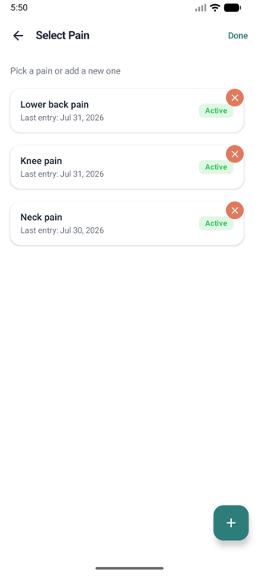
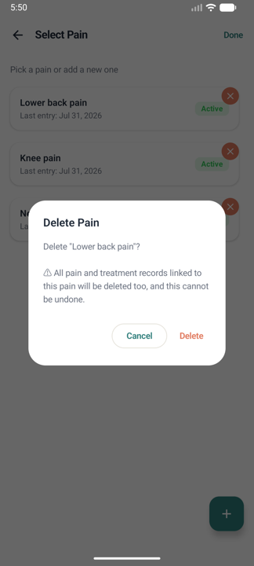
Deleting a pain also deletes every pain record and treatment record attached to it. This cannot be undone.
If a condition has resolved and you simply will not log it any more, leave it in place. A pain sitting in the list costs you nothing, and if the same problem returns you can read the old history alongside the new. Deleting is best reserved for entries you created by mistake.
Tidying symptom and treatment items — long-press
The chips behave identically on both screens.
- The Symptom Type chips on the Log Pain screen — sensations such as "Tingling" or "Stiff"
- The Treatment Categories chips on the Log Treatment screen — items such as "Ibuprofen" or "Massage"
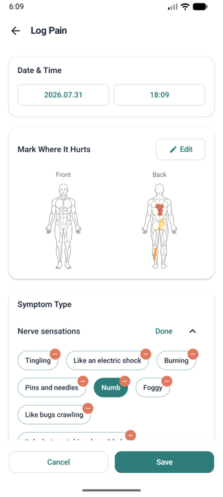
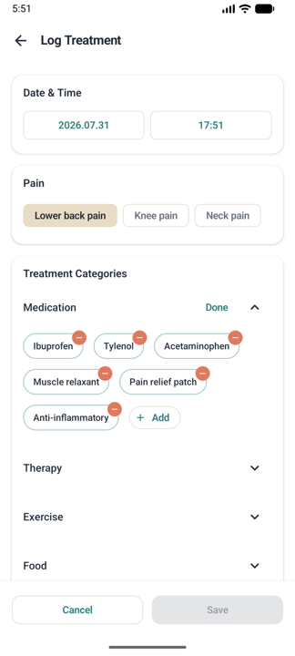
- Long-press a chipOnly the chips in that chip's category start wiggling and get a ⊖ badge; other categories are untouched. A Done link appears next to the category title.
- Tap ⊖ on the chips you want out of the listThis happens immediately, without a confirmation dialog. See the table below for what it does.
- Tap Done next to the category titleThe wiggling stops and tapping selects chips normally again.
| Kind of chip | What ⊖ does |
|---|---|
| An item you added (via + Add) | Removed from the list for good. You can recreate it with + Add. |
| A built-in item | Hidden from the list. It is concealed rather than deleted. |
- Either way, records you already saved are untouched — only the list of choices for future records changes.
- If the item was selected on the record you are writing, that selection is cleared too.
A hidden built-in item cannot currently be brought back from inside the app — adding an item with the same name via + Add will not restore it. However long the list feels, it is safer to leave the built-in items alone and add the wordings you actually use with + Add.
Settings → Data → Reset Data deletes every pain, record and treatment at once. That cannot be undone either, so check your backup first.
Browsing your records
Records list
The Records tab at the bottom. Filter by All / Pain / Treatment, and use the search field to search notes and treatment names. Searching "injection" finds the injection treatments; searching a word you used in a note finds those pain records.
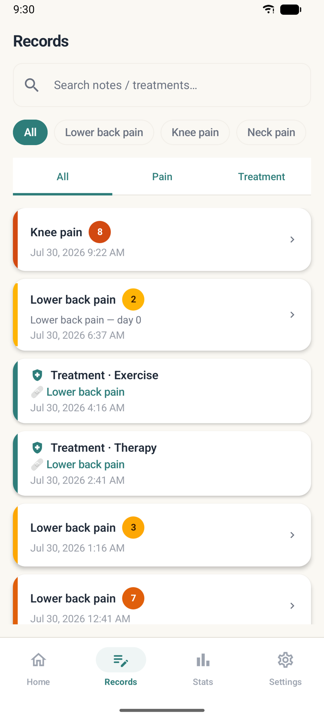
Detail view
Tapping a pain opens its detail screen.
- Pain records tab — intensity, pain character, body map and note for each entry
- Treatment records tab — the treatments attached to this pain
- Last treatment — for each pain record, the most recent treatment before it and how long before (within 1 hour / N hours ago / N days ago)
The detail screen is for per-entry history; aggregated figures and charts live in Pain Analysis.
Pain Analysis
The Stats tab at the bottom. Choose which pain to analyse and its screen opens.
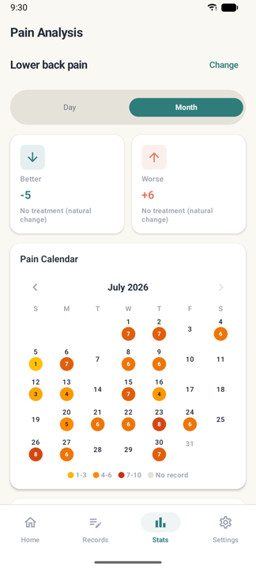
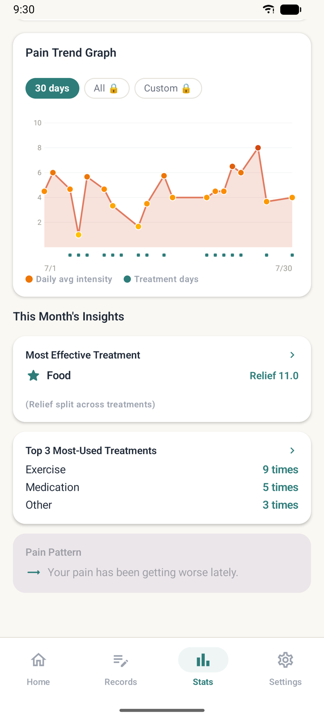
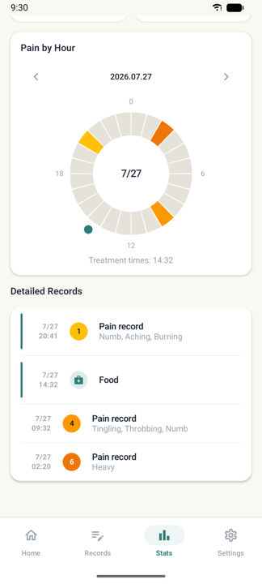
Period
Switch between Day and Month. In Day view, swipe left and right to move between dates.
Pain by Hour
Compares average intensity across morning, afternoon, evening and night. If pain clusters in one window, that is a concrete basis for adjusting routines or dosing times.
Pain Calendar
A month grid coloured by intensity. Days without records stay empty. Tap a day to see its records below.
Pain Trend Graph
Daily average intensity as a line, with the days you had treatment marked on top. Choose 30 days / All / Custom range. Where the line falls in a stretch dense with treatment markers, that period is worth a closer look.
This month's insights
Plain-language summaries of your records — for example "Pain has been easing off recently" or "Average pain fell from 6.4 to 4.1 after treatment". When there is too little data, the app says so instead of asserting a trend.
Treatment effectiveness
- Most Effective Treatment — with use count, average before, and average after.
- Top 3 Most-Used Treatments — by count, which can differ from the effectiveness ranking.
- Overall Treatment Effectiveness — ranked by effect score.
When the most-used treatment is not the most effective one, the app points that out. It means the treatment you reach for by habit may not be the one that works best for you.
The reduction in pain after a treatment, divided among the treatments logged at the same time, accumulated across uses. If you took medication and applied heat together, they split that reduction. Treatments that were used often and consistently helped rise to the top.
On the free tier, statistics cover the last 30 days; earlier periods unlock with Premium.
How effectiveness is calculated
Tongda uses one simple, transparent rule. It is worth knowing so you can read the numbers correctly.
The rule
- Around each treatment, the pain record within the 6 hours before counts as "before" and the one within the 6 hours after counts as "after".
- The difference between those two intensities is that treatment's change.
- If several treatments were logged at the same time, the change is divided among them.
- Where multiple comparable cases exist, they are averaged.
If there is no pain record within 6 hours on either side, no effect is calculated and the app reports that there is nothing to compare.
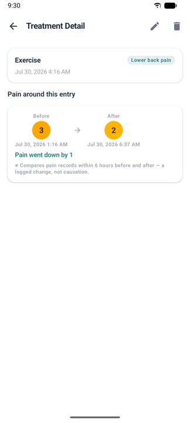
- This is not causation. It is a change in your records; it cannot separate natural improvement from the effect of the treatment.
- Samples are small. Below three comparable cases the app marks the result as indicative only.
- It reflects your logging habits. If you log when it hurts but not when it eases, effectiveness will look lower than it was.
- It is not a test of statistical significance and should not be used on its own to make treatment decisions.
The way to make it accurate is simple: log your pain just before a treatment and again a few hours later. With those two points, the comparison works.
Notifications
Open it from the notification card on the home screen or from Settings. This is where you create reminders so logging does not get forgotten.
Creating a reminder
- Tap + at the bottom right
- Choose the kindPain or Treatment — this changes the wording and the quick-log action.
- Choose the triggerTime fires at a set clock time; Interval repeats every 15 / 30 minutes, 1 / 2 / 4 hours, or a custom number of minutes.
- Choose the daysEvery day / Weekdays / Weekends / Once. "Once" switches itself off after firing.
- Add a label (optional)Something like "Morning pain check" is shown in the notification.
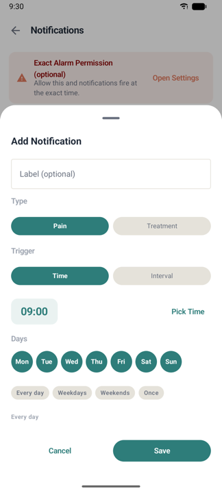
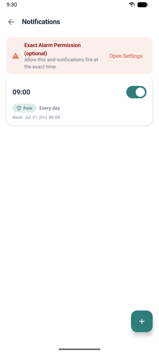
After saving, the card shows the next fire time so you can confirm the setting is right.
Logging straight from a notification
Each notification carries two actions.
- Quick log — saves a copy of your last record without opening the app: the last intensity for pain, or the last treatment you logged. Only records from the last 24 hours can be copied; if there is none, the app tells you instead of saving, and tapping the notification takes you to the full logging screen.
- Full log — opens the logging screen in the app.
Permissions
- Notification permission — required for reminders to appear. You can grant it from the banner at the top of the screen.
- Exact alarm permission (optional) — when granted, reminders fire at the exact time. Without it they may arrive slightly late depending on the device.
Battery optimisation is the usual cause. Go to system Settings → Apps → Tongda → Battery and set it to Unrestricted. See the FAQ for the full checklist.
Home screen widget
A widget on your home screen shows your most recent pain and jumps straight into logging. Long-press the home screen and pick Tongda from the widget list.
Once placed, you can adjust:
- Background colour and opacity — from fully transparent to opaque
- Appearance — Auto / Light / Dark
Exporting a report
This produces a document to bring to an appointment. Go to Settings → Report → Export Report, or start from a pain's detail screen. Pick the pain, choose where to save, and the report is written as a PDF file.
What the report contains
| Section | Contents |
|---|---|
| Summary | Status, period covered, number of records, average / highest / lowest intensity, treatment count |
| Pain Area Comparison | A cumulative body map for the whole period plus key moments (first, widest, highest, most recent) |
| Key figures | Average intensity, last 7 days, peak intensity, trend against the start, most frequent time of day |
| Pain trend | Daily average intensity chart with treatment days marked |
| Accompanying symptoms | Most frequently logged symptom types |
| Treatment Response | Uses and before/after change per treatment (method in how effectiveness is calculated) |
| Timeline · Appendix | Every pain and treatment record in the period, in chronological order |
Appointments are short. Print the report or have the PDF open, and lead with two sections: Summary and Treatment Response. Bring up the rest only if questions come up.
The saved PDF is a single self-contained file: it opens without an internet connection and can be emailed or messaged as it is. Once saving finishes, Open takes you straight to it.
On the free tier, exporting may show a short rewarded ad. If the ad fails to load, the export proceeds anyway — an ad will never stand between you and your own data.
Backup and restore
Because records live only on your device, always export a backup before changing phones or uninstalling the app. Go to Settings → Data.
Export Data
A backup holds pain and treatment records only — photos are not included. Use Export photos in the library to move them when you change devices.
This produces a single backup file with a .tngd extension. You choose where it goes, and you can keep it in a cloud drive or email it to yourself. The contents are encrypted, so it cannot be read in a text editor. No password is requested.
Import Data
When you pick a backup file, the app asks how to apply it.
- Replace all — deletes every existing pain, record and treatment and replaces them with the file's contents. Use this when moving to a new device.
- Merge — keeps existing data and adds the file's contents. Use this to combine records from two devices.
Replace all cannot be undone. If the current device holds records you want to keep, export a backup first, then import. The maximum size of a backup file that can be imported is 10 MB.
Reset Data
Reset Data in Settings deletes all pains, records and treatments. It cannot be undone — confirm you have a backup first.
Language and text size
Language
Settings → Language offers System default / 한국어 / English. The app's language can differ from your device language. The change applies immediately, and this manual opens in whichever language the app is set to.
Symptom and treatment items you created yourself stay in the language you typed them in. Only the items the app ships with are translated.
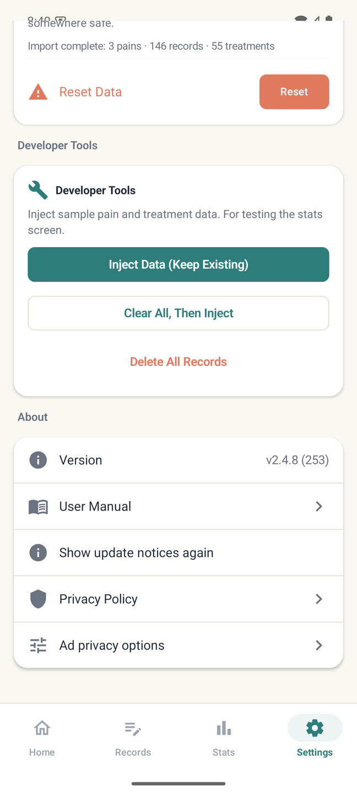
Text size
Settings → Text size offers Small / Default / Large / Extra Large, with a live preview. It applies throughout the app.
Where your data lives
- Records are stored on your device. There is no account or sign-in, and pain and treatment records are not uploaded to a server.
- Backup files are yours to manage. You decide where the exported
.tngdfile is kept. - The weather card on the home screen checks your approximate location (city-level accuracy) to fetch conditions from an external weather service. It is for display only and is not stored in your pain records. The rest of the app works normally if you decline the location permission.
- Ads are shown on the free tier, and the ad provider's own policies apply to them.
Full details are in the privacy policy, also reachable in the app via Settings → App info → Privacy policy.
Frequently asked questions
My reminders never arrive.
Work through these in order.
- Check whether the permission banner is still showing at the top of the Notifications screen — if so, tap it and grant permission.
- System Settings → Apps → Tongda → Notifications must be enabled.
- System Settings → Apps → Tongda → Battery, set to Unrestricted. Power-saving features on Samsung, Xiaomi, Huawei and others frequently delay or block reminders.
- If reminders drift a little late, grant the exact alarm permission from the Notifications screen.
- If the reminder's day setting is "Once", it switches itself off after firing.
I am changing phones. How do I move my records?
On the old device, Settings → Data → Export Data to create a .tngd file, and move it via cloud storage or email. On the new device, use Import Data and choose Replace all. For Premium, sign in with the same Google account and tap Restore purchase.
I deleted a record by mistake. Can I undo it?
There is no undo inside the app. If you have an earlier backup file, you can import it to restore. Exporting a backup regularly is the safeguard.
I named a pain badly. Can I rename it?
Renaming is not currently supported, and neither is changing the status (active / chronic / resolved) — a pain you create always starts as "active".
If it holds almost no records yet, it is quicker to long-press and delete it and create it again under the right name. If records have already accumulated, leave the name as it is: deleting takes every record and treatment attached to that pain with it, which is a far worse loss than an awkward name.
I hid a built-in symptom (or treatment) item by mistake.
Unfortunately it cannot be restored from inside the app — adding an item with the same name via + Add does not lift the hiding. The only workaround today is to add your own item with a slightly different name (for example "Aching" → "Ache").
Records that already contain the item are unaffected, so your statistics and reports stay intact.
My statistics say there is not enough data.
Trends and effectiveness need a minimum number of records. Effectiveness in particular requires a pain record within 6 hours before and after the treatment (how effectiveness is calculated). Logging pain just before a treatment and again a few hours later fills this in quickly. Once three or more comparable cases exist, the low-confidence notice disappears.
The PDF will not open.
That message appears when the device has no app able to open PDFs. The file itself saved correctly — install a PDF viewer (Google Drive or Files, for example) and open it from where you saved it, or copy the file to a computer and open it there.
Several places hurt at once. How should I log that?
If they are part of the same condition you are tracking, paint each area at its own intensity on the body map. If they are genuinely separate problems (lower back pain and migraine, say), create a separate pain for each — analysis and reports are produced per pain.
Can I enter records later, in a batch?
Yes. Set the date and time to when the pain actually occurred. Bear in mind that time-of-day patterns and effectiveness are calculated from that value, so times recalled from memory reduce the accuracy of the analysis.
Can I remove symptom or treatment items I created?
You can switch off items you no longer use in the item list. Past records already saved with that item are kept as they are.
Medical notice
Tongda is a record-keeping tool, not a medical device. It is not intended to diagnose, treat, or prevent any disease.
The trends and treatment effects it shows are indicative figures computed from what you entered. They do not establish statistical significance or medical causation. Do not make any treatment decision — including starting, stopping, or changing a medication — on the basis of these numbers alone. Consult your doctor or pharmacist.
For pain that is sudden and severe, unlike anything you have had before, or accompanied by weakness, fever, or reduced consciousness, seek medical care immediately rather than logging it.
For questions or suggestions, please get in touch through the Tongda page on Google Play.